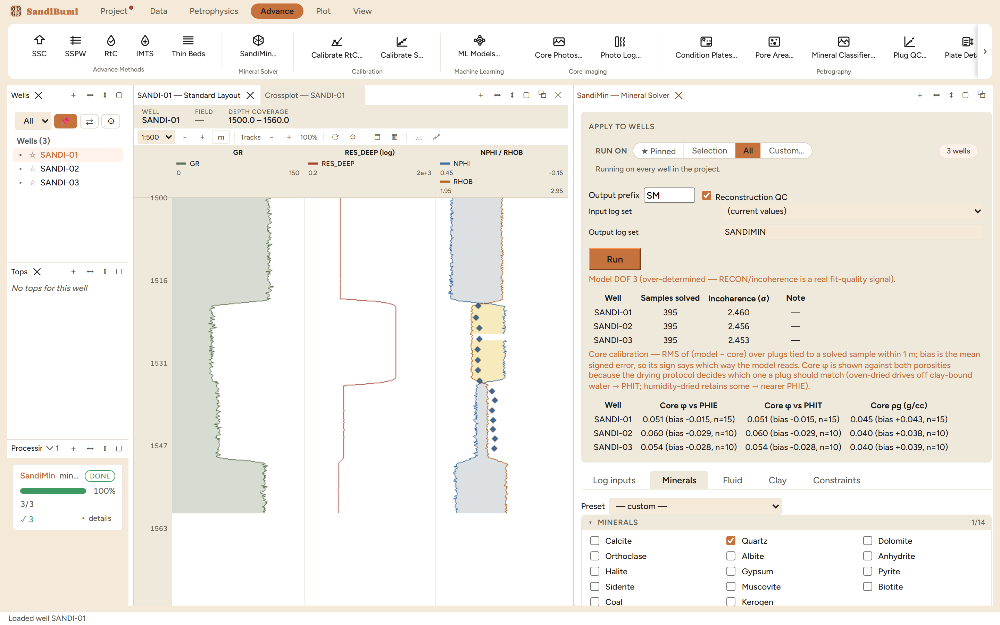

SandiMin is the general mineral solver: pick which logs to trust, which
minerals, clays and fluids the rock may contain, and it inverts the tool
responses per sample into component volumes plus porosity and saturation.
Reach for it when the single-mineral porosity models stop being honest about
the rock (mixed mineralogy, radioactive sands, bad-hole intervals a simpler
model would average through), or when a study needs one internally
consistent volume model rather than a stack of separate curves.
The pane

A quartz-illite-water model on five logs, run on all three
wells into the SANDIMIN set: 395 samples solved per well, incoherence
2.45–2.46σ, and the core-calibration table with its
drying-protocol note.
Log inputs (16 on offer, 5 on by default here: density,
neutron, sonic, gamma ray and deep conductivity) decide the equations;
the components decide the unknowns. The pane states the degrees of
freedom and what they mean:
Model DOF 3 (over-determined — RECON/incoherence is a real fit-quality signal).
Components are grouped Minerals / Clays / Fluids with presets
(Clastic, SSC-style, Carbonate, Organic); the endpoints matrix shows
exactly which component sees which log, with the U-zone water's
conductivity marked "auto".
Reconstruction QC writes the per-sample incoherence, which is
what the Results QC pane's recon check reads.
The run goes through run custody like every other write, and outputs
land in their own named set.
Step by step
Open Advance ▸ SandiMin…, choose the logs the
hole quality supports and the components the geology justifies. More
logs than components means over-determined, and the misfit becomes
meaningful; equal counts means any answer reconstructs perfectly and
the misfit proves nothing.
Review the endpoints matrix, press Run, and complete the
custody dialog.
Read the incoherence per well first, then the core calibration.
Reading the result
Two verdicts come back. The incoherence (about 2.5σ here) says how
well the solved volumes reproduce the measured logs; a well that jumps out
of family has either different rock or a log problem. The core calibration
compares the model against the plugs, with the RMS and a signed bias per
well, and its caption makes the interpretation decision explicit:
Core calibration — RMS of (model − core) over plugs tied to a solved sample
within 1 m; bias is the mean signed error, so its sign says which way the
model reads. Core φ is shown against both porosities because the drying
protocol decides which one a plug should match (oven-dried drives off
clay-bound water → PHIT; humidity-dried retains some → nearer PHIE).
On the example wells the porosity bias is small and negative (about
−0.02 to −0.03) while grain density reads about +0.04 g/cc
high, a consistent pair that points at the endpoint values rather than at
noise: the fix would be an endpoint edit, not a re-run with more
components.
QC and pitfalls
Add a component only when a log can see it. Two minerals with
near-identical endpoints split volume arbitrarily between them, and
the incoherence will not warn you because both answers reconstruct the
logs equally well.
The endpoint matrix is the model. A plausible volume track
from wrong endpoints is the classic silent failure; check the matrix
against a lithology you trust before believing a surprise
mineral.
Bias before scatter. A systematic core offset means an
endpoint or a depth-tie issue; chasing it by tuning constraints treats
a calibration problem as a solver problem.